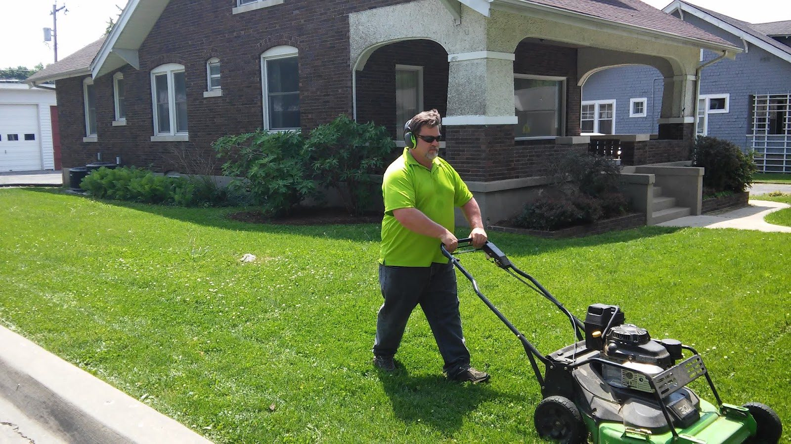
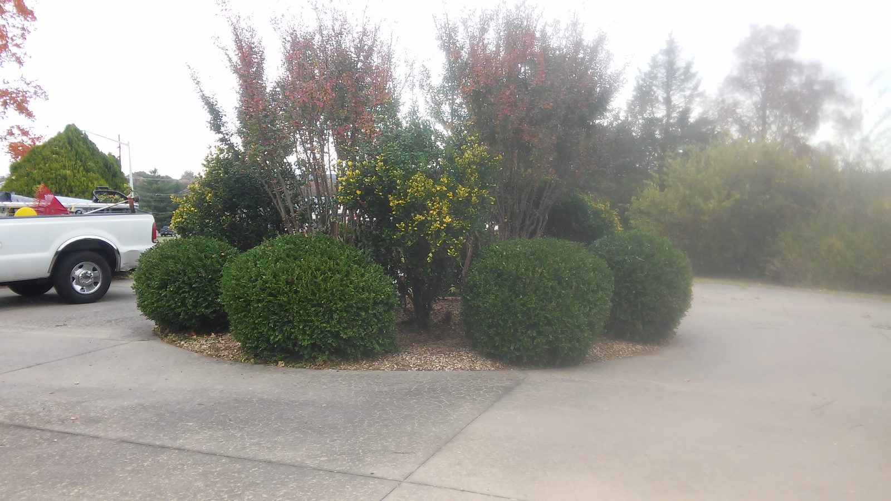
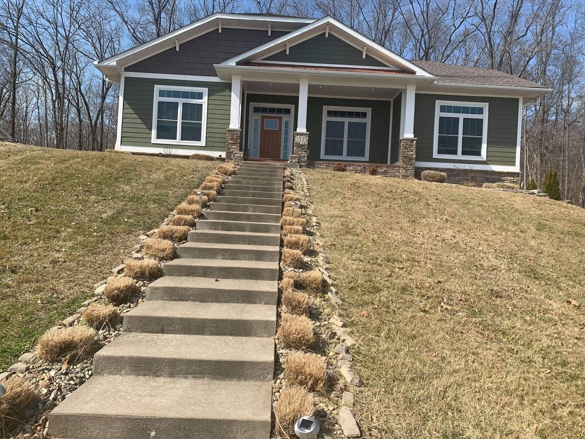
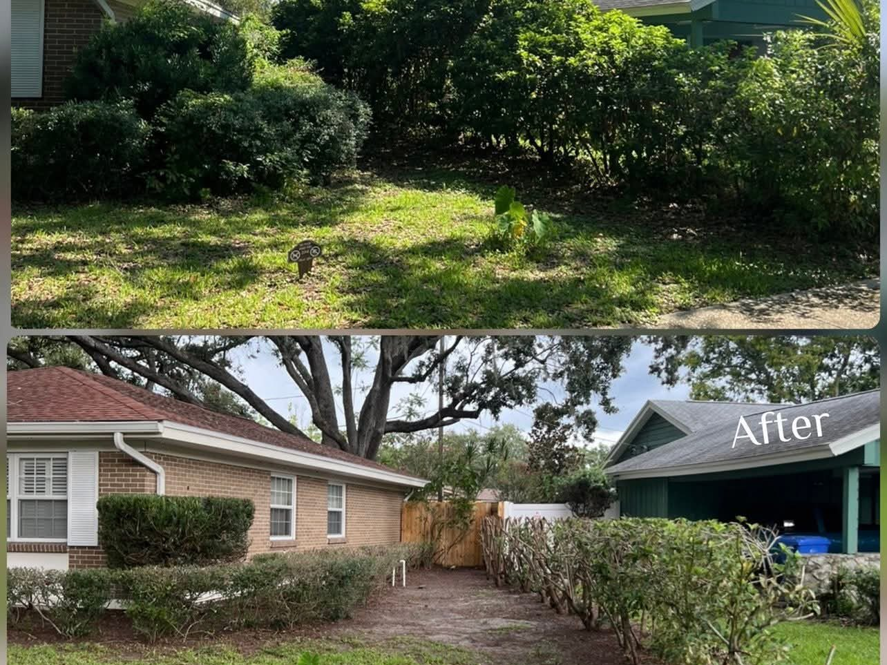
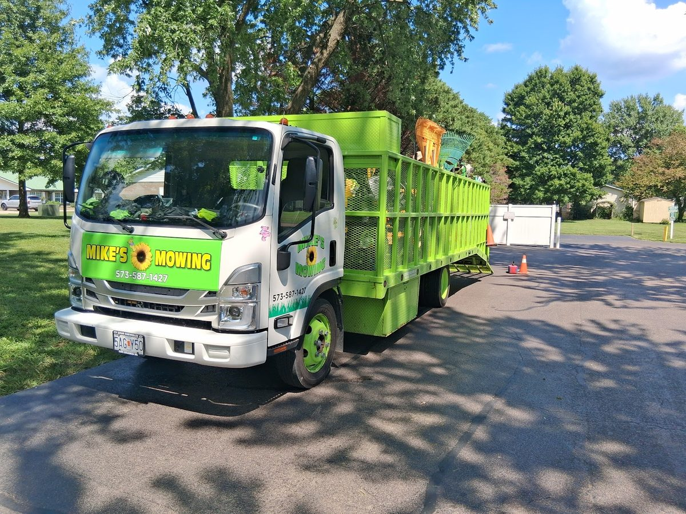
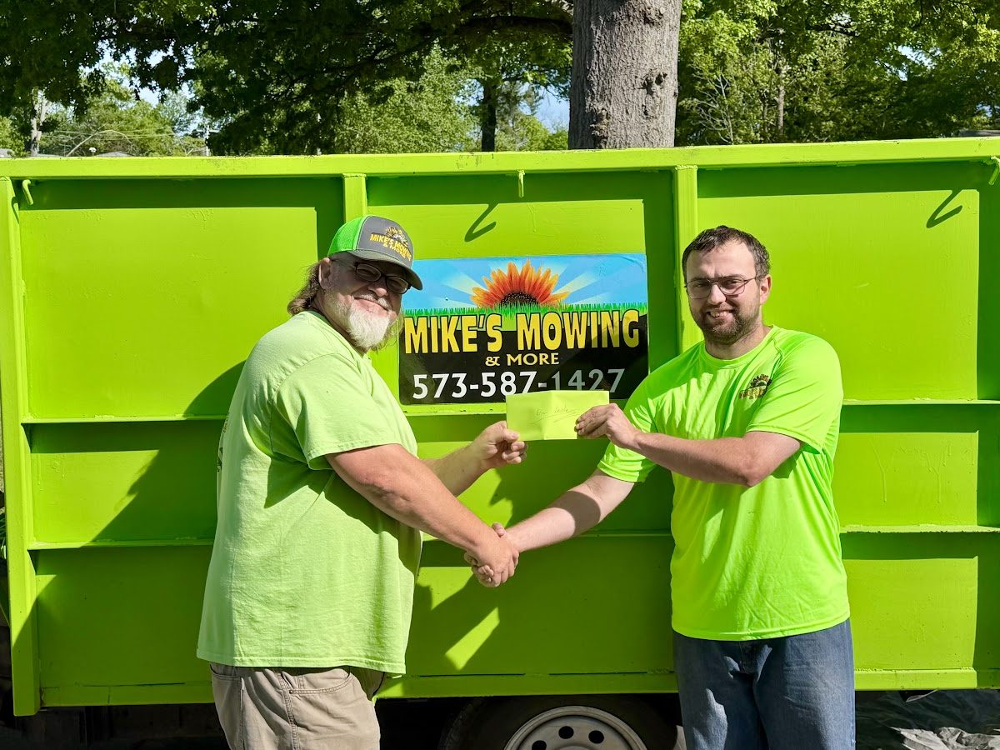
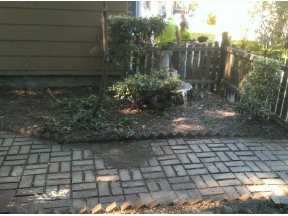
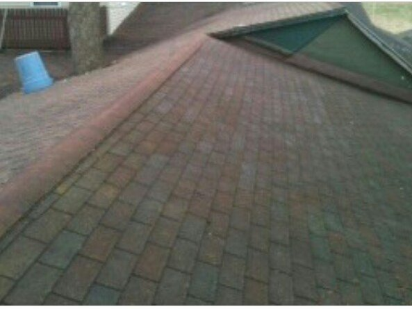

Lawn mowing & maintenance
Weekly or one-time mowing, edging and trimming that keeps the yard looking cared for — not just cut.

We mow, trim, and clear the jobs most crews skip — leaves, gutters, overgrown beds — for homeowners around Cape Girardeau, Jackson, and Scott City.
We keep the regular mowing on schedule and take care of the messier jobs too — leaves, gutters, and beds that got away from you. Here's where Cape Girardeau homeowners put us to work.
Weekly or one-time mowing, edging and trimming that keeps the yard looking cared for — not just cut.
Overgrown beds trimmed back, cleaned up and mulched — the kind of shrub and bed work that makes a yard look finished again.
Full-yard leaf pickup and fall cleanup, so the lawn underneath doesn't spend the winter buried.
Leaves and storm debris cleared out of gutters and roof valleys before they back up and cause real damage.

Overgrown beds and shrubs that have gotten out of hand aren't a job most crews want. We clear them back, clean up the bed, and leave it looking kept — not just trimmed for one day.
A real Mike's Mowing & More job near Cape GirardeauEvery photo below is a real Mike's Mowing & More job — no stock, no borrowed images. Tap any one to take a closer look.






We're out mowing and cleaning up yards around Cape Girardeau every week, so you get a crew that knows the area and shows up when it says it will. We work in:
Not sure if you're in range? Call or text us — if you're anywhere near Cape Girardeau, we can usually help.
The fastest way to get a quote is a call or text — you'll reach us directly, not a call center. Tell us what's going on with your yard and we'll give you a straight, no-pressure price.
(573) 587-1427